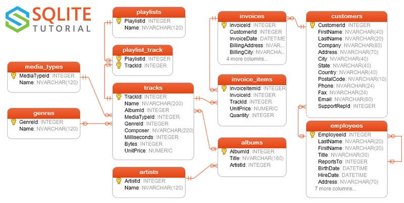
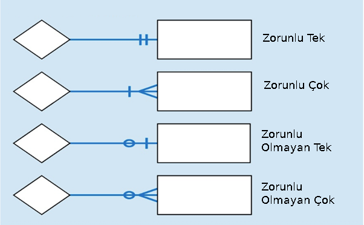
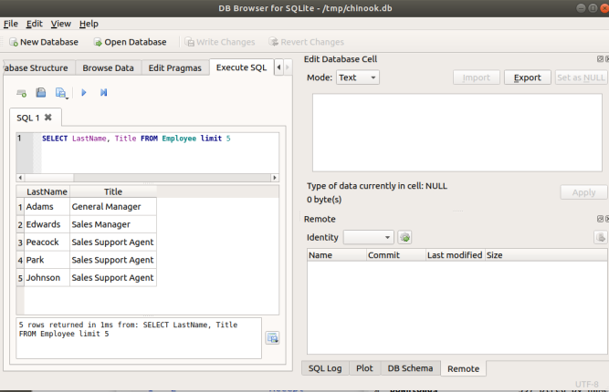

SQL ilişkisel tabanları sorgulamak için kullanılır. İlişkisel model, ve giriş bilgileri [1]'de bulunabilir.
2010'lu yıllarda anahtar/değer (key/value) tabanları ön plana çıkmış olsa da, SQL hala popüler olmaya devam ediyor. Burada SQL'un tasarlanma felsefesi rol oynamış olabilir, SQL ne istendiğini tarif eder nasıl alınacağının tarif etmez. Bu tür bir yapıyı istenen ölçeğe uygulamak mümkündür, hatta Google'un BigQuery dili de aynen bunu yapıyor.
Chinook
Bu tabanın sqlite ortamında nasıl kurulacağını [2]'de anlattık. Chinook iTunes gibi bir dijital medya satış şirketi için hazırlanmış bir taban, verilerin bazıları gerçek iTunes'dan alınmış, müşterilerle alakalı kısımları yapay.

Varlık-İlişki (Entity-Relationship -ER-) diyagramına bakınca ana ilişkileri görebiliyoruz. ER diyagramları çokluğu belirtmek icin bazı semboller kullanır [12], bunlar,

Bazı yardımcı fonksiyonlar,
import sqlite3, pandas as pd
pd.set_option('display.width', 1000)
pd.set_option('display.max_columns', 10)
DB = '/tmp/chinook.db'
def runsql(sql):
conn = sqlite3.connect(DB)
c = conn.cursor()
rows = c.execute(sql)
for row in rows: print (row)
conn.close()
def psql(sql):
conn = sqlite3.connect(DB)
c = conn.cursor()
rows = c.execute(sql)
df = pd.DataFrame(rows.fetchall())
return df
runsql("SELECT LastName, Title FROM Employee limit 5")
('Adams', 'General Manager')
('Edwards', 'Sales Manager')
('Peacock', 'Sales Support Agent')
('Park', 'Sales Support Agent')
('Johnson', 'Sales Support Agent')
Pandas ile
psql(sql)
Out[1]:
0 1
0 Adams General Manager
1 Edwards Sales Manager
2 Peacock Sales Support Agent
3 Park Sales Support Agent
4 Johnson Sales Support Agent
Bu fonksiyonları ile Python üzerinden SQL işletebilmek için kullandık,
fakat yine [2]'de tarif edilen sqlitebrowser programı üzerinden de
bu sorguları işletebiliriz.

Basit
SELECT ile satır seçimi yapılır, hangi satırlar, hangi kolonlar
olacağı bu komutun seçeneklerindendir. En basit olan her şeyi seçmek,
her kolon, her satırı (gerçi 10 tane ile sınırladık aslında ama
LIMIT olmasa her şey gelir),
psql("""SELECT * FROM Artist LIMIT 10""")
Out[1]:
0 1
0 1 AC/DC
1 2 Accept
2 3 Aerosmith
3 4 Alanis Morissette
4 5 Alice In Chains
5 6 Antônio Carlos Jobim
6 7 Apocalyptica
7 8 Audioslave
8 9 BackBeat
9 10 Billy Cobham
Bu tablonun şeması,
CREATE TABLE [Artist]
(
[ArtistId] INTEGER NOT NULL,
[Name] NVARCHAR(120),
CONSTRAINT [PK_Artist] PRIMARY KEY ([ArtistId])
);
Yani ArtistId ve Name almış olduk.
En basit sorgulardan bir diğeri satır saymak,
runsql("""SELECT count(*) FROM Artist""")
(275,)
Belli bir kolondaki büyüklüğe göre sıralama yapmak isteyebiliriz [9],
psql("""SELECT Lastname, Firstname, Birthdate FROM Employee ORDER BY BirthDate""")
Out[1]:
0 1 2
0 Park Margaret 1947-09-19 00:00:00
1 Edwards Nancy 1958-12-08 00:00:00
2 Adams Andrew 1962-02-18 00:00:00
3 Johnson Steve 1965-03-03 00:00:00
4 Callahan Laura 1968-01-09 00:00:00
5 King Robert 1970-05-29 00:00:00
6 Mitchell Michael 1973-07-01 00:00:00
7 Peacock Jane 1973-08-29 00:00:00
WHERE ile filtreleme yapabiliriz,
psql("""
SELECT EmployeeId, Lastname, Firstname, Birthdate FROM Employee
where EmployeeID >= 6
""")
Out[1]:
0 1 2 3
0 6 Mitchell Michael 1973-07-01 00:00:00
1 7 King Robert 1970-05-29 00:00:00
2 8 Callahan Laura 1968-01-09 00:00:00
Bu kavramları beraber kullanabilirim, mesela fatura miktarı 10 dolardan yüksek olan tüm faturaları göster, ve miktara göre sırala [13],
psql("""SELECT InvoiceId, InvoiceDate, Total
FROM Invoice
WHERE Total > 10
ORDER BY Total LIMIT 10""")
Out[1]:
0 1 2
0 298 2012-07-31 00:00:00 10.91
1 312 2012-10-01 00:00:00 10.91
2 311 2012-09-28 00:00:00 11.94
3 5 2009-01-11 00:00:00 13.86
4 12 2009-02-11 00:00:00 13.86
5 19 2009-03-14 00:00:00 13.86
6 26 2009-04-14 00:00:00 13.86
7 33 2009-05-15 00:00:00 13.86
8 40 2009-06-15 00:00:00 13.86
9 47 2009-07-16 00:00:00 13.86
WHERE için birden fazla şartı zincirlemek mümkün, AND ve OR ile
bunu yapabilirim,
runsql("""SELECT count(*)
FROM Invoice
WHERE BillingState IS NOT NULL
AND BillingState = 'AZ'
OR BillingState = 'CA'
AND Total > 4 """)
(16,)
Hic sart vermeseydim,
runsql("""SELECT count(*) FROM Invoice """)
(412,)
Gruplama
Bir tablodaki, ya da birleştirimler üzerinden oluşturulmuş bir sonuç kümesindeki kolonlar üzerinde gruplama yapmak mümkündür. Mesela fatura tablosunda ülkeler üzerinden gruplama yapabilirim, ve her grubun satır sayısını raporlamak isteyebilirim.
psql("""
SELECT BillingCountry, COUNT(InvoiceId)
FROM Invoice
GROUP BY BillingCountry
""")
Out[1]:
0 1
0 Argentina 7
1 Australia 7
2 Austria 7
3 Belgium 7
4 Brazil 35
5 Canada 56
6 Chile 7
7 Czech Republic 14
8 Denmark 7
9 Finland 7
10 France 35
11 Germany 28
12 Hungary 7
13 India 13
14 Ireland 7
15 Italy 7
16 Netherlands 7
17 Norway 7
18 Poland 7
19 Portugal 14
20 Spain 7
21 Sweden 7
22 USA 91
23 United Kingdom 21
Önemli not, SELECT içinde sadece üzerinden gruplama yaptığım
kolonlardan seçebilirim. Üzerinden gruplama yapmadığım şeylerden
seçmek anlamsız olurdu, çünkü o şeyler gruplamanın ima ettiği nicelik
sayısında (cardinality), toplam seviyesinde değiller.
Gruplar üzerinde uygulanabilen özetleme hesapları vardır, COUNT,
MAX, MIN bunlardan.
HAVING ile gruplar üzerinde filtreleme yapabilirim, mesela üstteki
sonuçlarda sadece 10 taneden daha fazla olan grupları görmek
isteyebilirim,
psql("""
SELECT BillingCountry, COUNT(InvoiceId)
FROM Invoice
GROUP BY BillingCountry
HAVING COUNT(InvoiceId) > 10
""")
Out[1]:
0 1
0 Brazil 35
1 Canada 56
2 Czech Republic 14
3 France 35
4 Germany 28
5 India 13
6 Portugal 14
7 USA 91
8 United Kingdom 21
Birleştirim (Join)
Basit bir birleştirme işlemi ile devam edelim. Tüm şarkılar Track
tablosunda, o şarkının hangi türe ait olduğu Genre
tablosunda. Aradaki bağlantı Track üzerinde duran bir yabancı
anahtar, GenreId. O zaman her şarkının ait olduğu tür için GenreId
üzerinden bir birleştirme gerekiyor,
psql("""
SELECT t.Name AS track_name,
g.name AS genre_name
FROM Track t
JOIN Genre g
ON t.GenreId = g.GenreId
LIMIT 5""")
Out[1]:
0 1
0 For Those About To Rock (We Salute You) Rock
1 Balls to the Wall Rock
2 Fast As a Shark Rock
3 Restless and Wild Rock
4 Princess of the Dawn Rock
Sonuçları gene sınırladık LIMIT 5 ile.
Biraz önce bir iç birleşim (inner join) yapmış olduk. Bu tür
birleşimde eğer üzerinden birleştirilen kimlik iki tarafta da yoksa,
sonuca alınmaz. Buna iç birleşim (inner join) ismi verilir. Fakat bu
derece harfiyen bir uyum olmasını her zaman istemeyebilirdik. Diyelim
ki şarkıları o şarkının ait olabileceği (dikkat, olabileceği) bir
fatura detay InvoiceLine satırıyla eşlemek istiyoruz. Eğer bir şarkı
hiçbir zaman satılmadıysa fatura detayında olmayabilir. Ama biz tüm
şarkıları yine de görmek istiyoruz, ve faturalamanın bizi
sınırlamasını istemiyoruz. Bu durumda bir sol birleşim LEFT JOİN
yaparız, o zaman soldaki tablo asal tablo olur, onun tüm satırları her
zaman geri döndürülür, ama sağda uyum yoksa fatura detay için boş
değer gelir.
psql("""
SELECT t.name, t.composer, i.InvoiceLineId
FROM Track t
LEFT JOIN InvoiceLine i
ON t.TrackId = i.TrackId
LIMIT 8""")
Out[1]:
0 1 2
0 For Those About To Rock (We Salute You) Angus Young, Malcolm Young, Brian Johnson 579.0
1 Balls to the Wall None 1.0
2 Balls to the Wall None 1154.0
3 Fast As a Shark F. Baltes, S. Kaufman, U. Dirkscneider & W. Ho... 1728.0
4 Restless and Wild F. Baltes, R.A. Smith-Diesel, S. Kaufman, U. D... 2.0
5 Princess of the Dawn Deaffy & R.A. Smith-Diesel 580.0
6 Put The Finger On You Angus Young, Malcolm Young, Brian Johnson 3.0
7 Let's Get It Up Angus Young, Malcolm Young, Brian Johnson NaN
Sonuçlarda Let's Get It Up şarkısının ait olduğu hiçbir
InvoiceLine yok. Bu durumda o kimlik için boş değer var, NaN
diyor.
Kendisiyle Birleşim (Self Join); Bir tabloyu kendisiyle de
birleştirebilirdik. Diyelim bir çalışanın tüm ismini ve onun amirinin
tüm ismini raporlamak istiyoruz. Bu durumda ReportTo kolonu tablonun
kendisine işaret ediyor.
psql("""
SELECT a.FirstName || ' ' || a.LastName AS employee,
b.FirstName || ' ' || b.LastName AS supervisor
FROM Employee a
JOIN Employee b
ON a.ReportsTo = b.EmployeeId""")
Out[1]:
0 1
0 Nancy Edwards Andrew Adams
1 Jane Peacock Nancy Edwards
2 Margaret Park Nancy Edwards
3 Steve Johnson Nancy Edwards
4 Michael Mitchell Andrew Adams
5 Robert King Michael Mitchell
6 Laura Callahan Michael Mitchell
Bu arada dikkat çektiyse || komutu var, bu komut kolon değeri
birleştirmek için kullanılır. İsim ve soyisimi birleştirebilirim,
arasına bir boşluk koyarak yeni bir kolon oluşturmuş olurum. Bu kolona
AS ... ile bir isim de verirsem, çıktılar buna göre
düzenlenir. Hatta altsorgularda bile tanımlanan bu tür kolonlar üst
sorgular tarafından kullanılabilir.
Altsorgu (Subquery)
Bir altsorgu ana sorgunun içinde işleyen bir geçici sorgudur. Kendi başına işleyebilen bir sorgu olmalıdır, bu iyidir, çünkü bu şekilde ayrı test edilebilir. Mesela her ülkeden gelen hasılatı yüzdesini hesaplamak için önce tüm hasılatı bilmek gerekir, bu bir altsorgu olur.
psql("""SELECT BillingCountry,
(SUM(Total)/(SELECT SUM(Total) FROM Invoice))*100 AS Perc_Rev
FROM Invoice
GROUP BY BillingCountry""")
Out[1]:
0 1
0 Argentina 1.615563
1 Australia 1.615563
2 Austria 1.830284
3 Belgium 1.615563
4 Brazil 8.163704
5 Canada 13.053337
6 Chile 2.002061
7 Czech Republic 3.875290
8 Denmark 1.615563
9 Finland 1.787340
10 France 8.378425
11 Germany 6.719918
12 Hungary 1.959117
13 India 3.231985
14 Ireland 1.959117
15 Italy 1.615563
16 Netherlands 1.744396
17 Norway 1.701452
18 Poland 1.615563
19 Portugal 3.317015
20 Spain 1.615563
21 Sweden 1.658507
22 USA 22.462424
23 United Kingdom 4.846689
Bu sorgu işletilmeden önce altsorgu işletilir, ardından geri kalan işletilir.
Bir altsorguyu bir geçici tablo olarak bile kullanabiliriz, mesela
FROM içinde parantezler arasında bir sorgu işletip ona bir isim
verirsek, bu isme dış sorguda sanki bir tabloymuş gibi erişebiliriz.
Örnek isminde The kelimesi olan sanatçıların listelemek istesek
psql("""
SELECT names_with_the.*
FROM (SELECT Name
FROM Artist
WHERE Name LIKE '%The%') AS names_with_the
LIMIT 10""")
Out[1]:
0
0 Santana Feat. Dave Matthews
1 Santana Feat. The Project G&B
2 The Black Crowes
3 The Clash
4 The Cult
5 The Doors
6 The Police
7 The Rolling Stones
8 The Tea Party
9 The Who
Gerçi dış sorguda fazla sükseli işlemler yapmadık ama yapabilirdik.
WHERE kısmında da altsorgu kullanılabilir,
psql("""
SELECT FirstName, LastName, BirthDate
FROM Employee
WHERE BirthDate IN (
SELECT BirthDate FROM Employee ORDER BY BirthDate
)
LIMIT 10
""")
Out[1]:
0 1 2
0 Andrew Adams 1962-02-18 00:00:00
1 Nancy Edwards 1958-12-08 00:00:00
2 Jane Peacock 1973-08-29 00:00:00
3 Margaret Park 1947-09-19 00:00:00
4 Steve Johnson 1965-03-03 00:00:00
5 Michael Mitchell 1973-07-01 00:00:00
6 Robert King 1970-05-29 00:00:00
7 Laura Callahan 1968-01-09 00:00:00
Bu sorgu bize en yaşlı 10 çalışanın ismini verdi.
WHERE içinde BirthDate İN görülüyor, yani BirthDate kolonunun
IN den sonra tarif edilen küme içinde olma şartını koymuş
oluyoruz. Bazen birleşim ve eşitlik şartı yerine bu tür tarif daha
rahat oluyor.
İlginç bir altsorgu daha, hangi ülkenin müşteri en çok ödeme yaptı? [7]'den top_country.sql. Bunun için önce tüm ülkeler bazında satış toplamı alıyoruz, dış sorguda ise toplamların içinden maksimum olanını çekip çıkartıyoruz.
psql("""
SELECT Country, MAX(Total_Sales_For_Country) as Total_Spent
FROM
(SELECT BillingCountry as Country , SUM(Total) as Total_Sales_For_Country
FROM Invoice
GROUP BY BillingCountry)
""")
Out[1]:
0 1
0 USA 523.06
Daha çetrefil birleşimler görelim, [7]'den line_item_track_artist.sql. Burada her fatura detayı için şarkı ve sanatçı isimlerinin dahil edilmesini istiyoruz. Bu bilgi normalde fatura detayında yok, o zaman bir bir dörtlü birleşim (four way join) gerekiyor.
psql("""
SELECT InvoiceLineId, t.name as "Song", ar.Name as "Artist"
FROM InvoiceLine i
JOIN Track t
ON t.TrackId = i.TrackId
JOIN Album a
ON a.AlbumId = t.AlbumId
JOIN Artist ar
ON ar.ArtistId = a.ArtistId
ORDER BY t.TrackId
LIMIT 10
""")
Out[1]:
0 1 2
0 579 For Those About To Rock (We Salute You) AC/DC
1 1 Balls to the Wall Accept
2 1154 Balls to the Wall Accept
3 1728 Fast As a Shark Accept
4 2 Restless and Wild Accept
5 580 Princess of the Dawn Accept
6 3 Put The Finger On You AC/DC
7 4 Inject The Venom AC/DC
8 1155 Inject The Venom AC/DC
9 581 Snowballed AC/DC
Case When [6]
CASE WHEN ifadeleri ile seçilmiş her satır üzerinde koşulsal yan
işlemler yapmak mümkündür. Mesela hem sene hem de ülke bazlı toplam
almak istesek, ülke ismi, sene metninde CASE WHEN uygulayıp SUM
alabilirdik,
df = \
psql("""SELECT CAST(strftime('%Y', invoice_."InvoiceDate") AS BIGINT) AS "Year",
SUM(CASE WHEN invoice_."BillingCountry" = 'USA'
THEN invoice_."Total" END) AS "USA",
SUM(CASE WHEN invoice_."BillingCountry" = 'United Kingdom'
THEN invoice_."Total" END) AS "United Kingdom",
SUM(CASE WHEN invoice_."BillingCountry" = 'Canada'
THEN invoice_."Total" END) AS "Canada"
FROM "Invoice" AS invoice_
WHERE invoice_."BillingCountry" IN ('USA', 'United Kingdom', 'Canada')
GROUP BY 1
ORDER BY 1 DESC""")
df.columns = ['Year','USA', 'United Kingdom', 'Canada']
print (df)
Year USA United Kingdom Canada
0 2013 85.14 28.71 72.27
1 2012 127.98 9.90 42.57
2 2011 103.01 17.82 55.44
3 2010 102.98 30.69 76.26
4 2009 103.95 25.74 57.42
Her ülke için en popüler müzik türünü seçmek istiyoruz. Yani en fazla
alım olan şarkıları ülke bazında gruplamak lazım. Altta WITH ile bir
altsorgu yaratılıyor, bu sonuca bir isim veriliyor, t1, ve bu sonuç
bir diğer alt sorguyla t2 üzerinden birleştiriliyor [10].
psql("""
WITH t1 AS (
SELECT
COUNT(i.InvoiceId) Purchases, c.Country, g.Name, g.GenreId
FROM Invoice i
JOIN Customer c ON i.CustomerId = c.CustomerId
JOIN InvoiceLine il ON il.Invoiceid = i.InvoiceId
JOIN Track t ON t.TrackId = il.Trackid
JOIN Genre g ON t.GenreId = g.GenreId
GROUP BY c.Country, g.Name
ORDER BY c.Country, Purchases DESC
)
SELECT t1.*
FROM t1
JOIN (
SELECT MAX(Purchases) AS MaxPurchases, Country, Name, GenreId
FROM t1
GROUP BY Country
) t2
ON t1.Country = t2.Country
WHERE t1.Purchases = t2.MaxPurchases""")
Out[1]:
0 1 2 3
0 9 Argentina Alternative & Punk 4
1 9 Argentina Rock 1
2 22 Australia Rock 1
3 15 Austria Rock 1
4 21 Belgium Rock 1
5 81 Brazil Rock 1
6 107 Canada Rock 1
7 9 Chile Rock 1
8 25 Czech Republic Rock 1
9 21 Denmark Rock 1
10 18 Finland Rock 1
11 65 France Rock 1
12 62 Germany Rock 1
13 11 Hungary Rock 1
14 25 India Rock 1
15 12 Ireland Rock 1
16 18 Italy Rock 1
17 18 Netherlands Rock 1
18 17 Norway Rock 1
19 22 Poland Rock 1
20 31 Portugal Rock 1
21 22 Spain Rock 1
22 12 Sweden Latin 7
23 157 USA Rock 1
24 37 United Kingdom Rock 1
Averaj şarkı isminden daha uzun olan şarkıları geri döndür. Yine bir altsorgu, averaj şarkı uzunluğunu hesaplamak için [10].
psql("""
SELECT Name, Milliseconds FROM (
SELECT t.Name, t.Milliseconds, (SELECT AVG(Milliseconds) FROM Track) AS AvgLenght
FROM Track t
WHERE AvgLenght < t.Milliseconds
ORDER BY t.Milliseconds DESC )
LIMIT 10
""")
Out[1]:
0 1
0 Occupation / Precipice 5286953
1 Through a Looking Glass 5088838
2 Greetings from Earth, Pt. 1 2960293
3 The Man With Nine Lives 2956998
4 Battlestar Galactica, Pt. 2 2956081
5 Battlestar Galactica, Pt. 1 2952702
6 Murder On the Rising Star 2935894
7 Battlestar Galactica, Pt. 3 2927802
8 Take the Celestra 2927677
9 Fire In Space 2926593
Referans
[1] Veri Tabanları, Kurumsal Java 2005 Kitabından, PDF
[2] sqlite
[3] psycopg2
[4] https://github.com/Olamiotan/PythonStarter
[5] https://database.guide/2-sample-databases-sqlite/
[6] https://data-xtractor.com/knowledgebase/chinook-database-sample/
[7] https://github.com/KAPrueved/Chinook-SQL-Exercise
[8] Mando Iwanaga
[9] https://shichaoji.com/2016/10/10/database-python-connection-basic/
[10] https://github.com/douglasnavarro/chinook-analysis
[11] Postgresql
[12] https://www.guru99.com/er-diagram-tutorial-dbms.html
[13] https://www.c-sharpcorner.com/article/diving-into-basics-of-sql-server/
[14] MongoDB